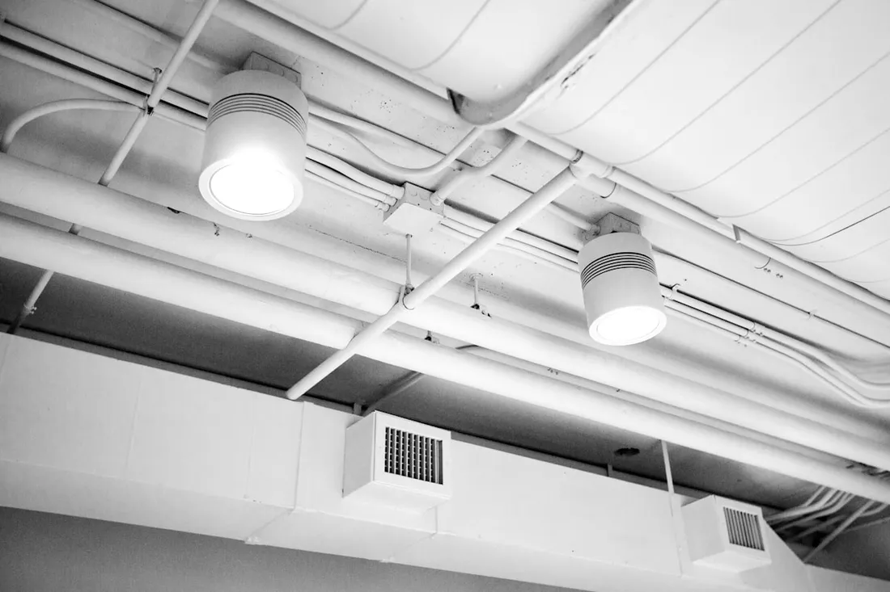
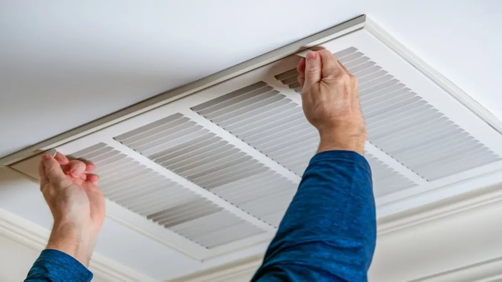

Whole-Home Air Duct Cleaning

This is a full cleaning of your home’s supply and return ductwork using negative-pressure vacuum equipment and mechanical agitation. It removes years of dust, pollen, and pet dander that regular filter changes never reach.
Ignoring dirty ducts means every cycle of your HVAC system keeps recirculating that debris through your living space, which is especially rough on anyone with allergies or asthma during Atlanta’s heavy spring pollen months.
Anyone who hasn’t had their ducts cleaned in 3+ years, just finished a renovation, or notices dust blowing from vents needs this service. See our full cleaning process for a step-by-step breakdown.
Call us today for air duct cleaning in Atlanta.
Dryer Vent Cleaning

Lint builds up inside dryer vent lines even if you clean the lint trap every load, especially in longer vent runs common in Atlanta homes with dryers located away from an exterior wall.
A clogged dryer vent is one of the leading causes of residential house fires and also makes your dryer run hotter and longer, raising energy bills and shortening the appliance’s lifespan.
If your dryer takes longer than one cycle to fully dry clothes, or the outside vent flap barely moves when the dryer runs, it’s time to have the line cleared.
Call us today for dryer vent cleaning in Atlanta.
AC Evaporator Coil Cleaning

Your AC system’s evaporator coil collects dust and moisture every time it runs, and in Atlanta’s humid summers that combination creates a breeding ground for mold and bacteria on the coil surface.
A dirty coil forces your system to run longer to reach the same temperature, which drives up cooling bills and puts extra strain on the compressor — one of the most expensive parts to replace.
If your AC is running constantly but not cooling well, or you notice a musty smell specifically when the AC (not the heat) is on, the coil is a likely culprit.
Call us today for AC coil cleaning in Atlanta.
Duct Mold Removal & Sanitizing

When moisture gets into ductwork — from condensation, a drainage issue, or crawl-space humidity — mold can take hold on duct interiors and get pushed into your home’s air every time the system runs.
Left untreated, mold in ductwork tends to spread further into the system and can trigger respiratory symptoms in sensitive household members, especially during Atlanta’s humid summer months.
A musty smell, visible dark spots near vents, or a known history of moisture problems in your crawl space or attic are all signs this service is worth a call.
Call us today for duct mold removal in Atlanta.